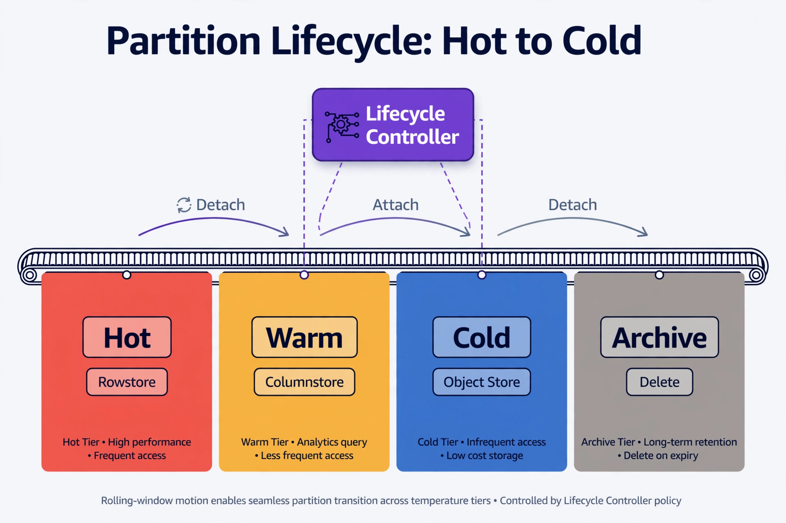

Chapter 26: Autonomous Data Lifecycle Management
Data lifecycle management has always been a DBA's responsibility, but in traditional environments it lived entirely in documentation, calendar reminders, and ad hoc scripts run by someone who remembered the retention policy. In an autonomous system, lifecycle management is policy-as-code: the database platform observes its own data, classifies it by temperature and regulatory standing, and executes retention, archival, compression, tiering, and deletion decisions continuously — without a human initiating the workflow. This chapter builds that system from policy definition through execution engines, covering SQL Server with production-grade automation patterns.
Defining Data Temperature and Policy as Machine-Readable Contracts
Before any autonomous system can act on data lifecycle decisions, it needs a structured model of what "lifecycle" actually means for each dataset. The mistake most teams make is encoding lifecycle logic into stored procedures or cron jobs with no formal policy layer — so when retention requirements change, the changes scatter across dozens of scripts. The ADE approach is to treat lifecycle policy as a first-class contract: a structured schema that the automation engine reads at runtime.
A policy contract captures five dimensions for every dataset: access temperature (how frequently is it read or written), regulatory retention floor (minimum time data must be kept), business retention ceiling (maximum time data is operationally useful), data classification (PII, financial, operational metrics, audit), and action chain (what happens at each lifecycle stage — compress, tier, archive, anonymize, delete).
Store these contracts in a dedicated metadata schema that all lifecycle automation reads from:
CREATE SCHEMA lifecycle;
GO
CREATE TABLE lifecycle.Policy (
PolicyId INT IDENTITY(1,1) PRIMARY KEY,
SchemaName NVARCHAR(128) NOT NULL,
TableName NVARCHAR(128) NOT NULL,
PartitionKey NVARCHAR(128),
DataClass NVARCHAR(50) NOT NULL
CHECK (DataClass IN ('pii','financial','operational','audit')),
TempHotDays INT NOT NULL DEFAULT 30,
TempWarmDays INT NOT NULL DEFAULT 90,
RetainMinDays INT NOT NULL,
RetainMaxDays INT NULL,
ActionWarm NVARCHAR(100) NOT NULL DEFAULT 'compress',
ActionCold NVARCHAR(100) NOT NULL DEFAULT 'archive',
ActionExpire NVARCHAR(100) NOT NULL DEFAULT 'delete',
AnonymizeBeforeDelete BIT NOT NULL DEFAULT 0,
Enabled BIT NOT NULL DEFAULT 1,
LastEvaluated DATETIMEOFFSET,
CreatedAt DATETIMEOFFSET DEFAULT SYSDATETIMEOFFSET(),
UpdatedAt DATETIMEOFFSET DEFAULT SYSDATETIMEOFFSET()
);
GO
-- Matching policy for SQL Server
INSERT INTO lifecycle.Policy (
SchemaName, TableName, PartitionKey, DataClass,
TempHotDays, TempWarmDays, RetainMinDays, RetainMaxDays,
ActionWarm, ActionCold, ActionExpire, AnonymizeBeforeDelete
) VALUES (
'app', 'UserEvents', 'EventTime', 'pii',
30, 90, 2555, 2555,
'compress', 'archive_to_blob', 'delete', 1
);
GOWith policy stored in schema, the automation layer has a single source of truth. When a GDPR request arrives demanding a shorter retention window for a specific table, one UPDATE to lifecycle.policy propagates to all downstream automation at next evaluation. This is the foundational shift: the human edits a contract, and the system executes the consequences.
Autonomous Partition Lifecycle: Rolling Windows and Automated Detach/Attach

Read it left to right along the conveyor. Fresh data lives in the red Hot band as rowstore — optimized for transactional access. As partitions age past the hot window, the controller detaches them and reattaches into the amber Warm band as compressed columnstore, trading write speed for analytic efficiency and smaller footprint. Older still, they slide into the blue Cold band on object storage — cheap, infrequent access. Past retention, the gray Archive band anonymizes and drops them. The purple Lifecycle Controller above orchestrates the detach/attach rolling-window motion; the curved arrows are metadata operations, which is why the data never goes offline during a move. The key insight: the conveyor turns storage tiering from a quarterly project into a continuous background process — every partition is always in the cheapest tier that still meets its access pattern.
Partitioning is the mechanical prerequisite for autonomous lifecycle management at scale. Without partition boundaries that map to time ranges, the engine cannot act on lifecycle stages without expensive full-table scans and row-by-row deletions. SQL Server partition switching gives the autonomous engine atomic, low-lock operations on complete data segments.
The autonomous partition manager has three jobs running continuously: proactive creation (ensure future partitions exist before they're needed), lifecycle transition (move partitions to warm/cold storage based on policy), and expiry processing (detach and drop partitions that have crossed their retention ceiling).
*Every partition moves through the same policy-driven stages; a late write re-heats it back to hot, and the IO headroom gate can hold a partition at its current stage rather than risk a heavy operation under load.*
In SQL Server, partition functions and partition schemes are the underlying engine, with the autonomous layer sitting above them as a policy executor that splits ranges, switches partitions to staging tables, and merges boundaries on schedule:
-- SQL Server: identify partition ranges and lifecycle stage
-- Uses partition function metadata joined against policy
WITH PartitionRanges AS (
SELECT
OBJECT_SCHEMA_NAME(i.object_id) AS SchemaName,
OBJECT_NAME(i.object_id) AS TableName,
p.partition_number,
p.rows,
SUM(a.total_pages) * 8 * 1024 AS SizeBytes,
-- For range-right: lower boundary is the previous value
LAG(rv.value) OVER (
PARTITION BY i.object_id ORDER BY p.partition_number
) AS RangeStart,
rv.value AS RangeEnd
FROM sys.partitions p
JOIN sys.indexes i
ON i.object_id = p.object_id AND i.index_id = p.index_id
JOIN sys.partition_schemes ps
ON i.data_space_id = ps.data_space_id
JOIN sys.partition_functions pf
ON ps.function_id = pf.function_id
LEFT JOIN sys.partition_range_values rv
ON rv.function_id = pf.function_id
AND rv.boundary_id = p.partition_number
JOIN sys.allocation_units a
ON a.container_id = p.hobt_id
WHERE i.index_id <= 1
GROUP BY
i.object_id, p.partition_number, p.rows, rv.value
),
PolicyJoin AS (
SELECT
pr.*,
pol.PolicyId,
pol.TempHotDays,
pol.TempWarmDays,
pol.RetainMinDays,
pol.RetainMaxDays,
pol.ActionWarm,
pol.ActionCold,
pol.ActionExpire,
pol.AnonymizeBeforeDelete,
DATEDIFF(DAY, CAST(pr.RangeStart AS DATETIMEOFFSET), SYSDATETIMEOFFSET()) AS DataAgeDays,
CASE
WHEN DATEDIFF(DAY, CAST(pr.RangeStart AS DATETIMEOFFSET), SYSDATETIMEOFFSET())
< pol.TempHotDays THEN 'hot'
WHEN DATEDIFF(DAY, CAST(pr.RangeStart AS DATETIMEOFFSET), SYSDATETIMEOFFSET())
< pol.TempWarmDays THEN 'warm'
WHEN pol.RetainMaxDays IS NOT NULL
AND DATEDIFF(DAY, CAST(pr.RangeStart AS DATETIMEOFFSET), SYSDATETIMEOFFSET())
> pol.RetainMaxDays THEN 'expired'
ELSE 'cold'
END AS LifecycleStage
FROM PartitionRanges pr
JOIN lifecycle.Policy pol
ON pol.SchemaName = pr.SchemaName
AND pol.TableName = pr.TableName
WHERE pol.Enabled = 1
AND pr.RangeStart IS NOT NULL
)
SELECT
SchemaName,
TableName,
partition_number,
RangeStart,
RangeEnd,
DataAgeDays,
LifecycleStage,
ActionWarm,
ActionCold,
ActionExpire,
AnonymizeBeforeDelete,
SizeBytes / 1048576.0 AS SizeMB
FROM PolicyJoin
WHERE LifecycleStage IN ('warm', 'cold', 'expired')
ORDER BY TableName, partition_number;The Python orchestrator consumes these queries, builds an execution plan, and dispatches actions. The key engineering decision is serialization: lifecycle operations against large partitions are expensive, so the orchestrator must rate-limit itself against observed I/O headroom, never initiating a cold-tier operation during peak traffic windows.
The Autonomous Archival Engine: Tiered Storage Without Human Scheduling
Archival in an autonomous system is not a monthly job — it's a continuous pipeline triggered by policy evaluation. When a partition crosses into the "cold" stage, the archival engine extracts it to object storage (S3, Azure Blob, GCS), optionally compresses it with Parquet or columnar format, records the archive manifest, and either drops the partition or replaces it with a foreign table wrapper pointing at the archived location.
The following Python engine handles the full archival workflow for SQL Server. It reads from lifecycle.Policy, queries the partition inventory, and dispatches archival operations with controlled concurrency:
import pyodbc
import boto3
import pandas as pd
import pyarrow as pa
import pyarrow.parquet as pq
import logging
import time
import tempfile
import os
from datetime import datetime, timezone
from dataclasses import dataclass
from typing import Optional
from concurrent.futures import ThreadPoolExecutor, as_completed
logging.basicConfig(level=logging.INFO, format='%(asctime)s %(levelname)s %(message)s')
logger = logging.getLogger("lifecycle.archival")
CONN_STR = ("DRIVER={ODBC Driver 18 for SQL Server};SERVER=localhost;"
"DATABASE=prod;UID=lifecycle_svc;PWD=*******;")
@dataclass
class ArchivalTask:
policy_id: int
schema_name: str
table_name: str
partition_number: int
range_start: datetime
size_bytes: int
action: str
anonymize: bool
class AutonomousArchivalEngine:
def __init__(self, s3_bucket: str, s3_prefix: str,
max_workers: int = 3, io_headroom_pct: float = 0.30):
self.s3_bucket = s3_bucket
self.s3_prefix = s3_prefix
self.max_workers = max_workers
self.io_headroom_pct = io_headroom_pct
self.s3 = boto3.client("s3")
def _connect(self):
return pyodbc.connect(CONN_STR)
def _get_pending_tasks(self, conn) -> list:
"""Query the lifecycle engine view for cold/expired partitions needing action."""
cur = conn.cursor()
cur.execute("""
SELECT
lp.PolicyId,
lp.SchemaName,
lp.TableName,
pi.partition_number,
pi.RangeStart,
pi.SizeBytes,
CASE
WHEN pi.LifecycleStage = 'expired' THEN lp.ActionExpire
WHEN pi.LifecycleStage = 'cold' THEN lp.ActionCold
ELSE lp.ActionWarm
END AS action,
lp.AnonymizeBeforeDelete
FROM lifecycle.PartitionLifecycleView pi
JOIN lifecycle.Policy lp
ON lp.SchemaName = pi.SchemaName
AND lp.TableName = pi.TableName
WHERE pi.LifecycleStage IN ('cold', 'expired')
AND lp.Enabled = 1
AND NOT EXISTS (
SELECT 1 FROM lifecycle.ArchivalLog al
WHERE al.PartitionNumber = pi.partition_number
AND al.Status = 'completed'
)
ORDER BY pi.SizeBytes ASC -- smallest first to validate before large ops
""")
rows = cur.fetchall()
return [ArchivalTask(*r) for r in rows]
def _check_io_headroom(self, conn) -> bool:
"""Gate archival operations on current I/O utilization."""
cur = conn.cursor()
cur.execute("""
SELECT CAST(cntr_value AS FLOAT)
FROM sys.dm_os_performance_counters
WHERE counter_name = 'Buffer cache hit ratio'
AND object_name LIKE '%Buffer Manager%'
""")
row = cur.fetchone()
cache_hit_ratio = row[0] or 0
# Low cache hit ratio signals heavy disk I/O — defer archival
if cache_hit_ratio < 90.0:
logger.warning("Cache hit ratio %.2f below threshold — deferring archival", cache_hit_ratio)
return False
return True
def _export_partition_to_parquet(self, conn, task: ArchivalTask) -> str:
"""Stream partition data to S3 as Parquet."""
cur = conn.cursor()
select_list = "*"
if task.anonymize:
# Anonymize known PII columns before export — column list from metadata
cur.execute("""
SELECT ColumnName FROM lifecycle.PiiColumns
WHERE SchemaName = ? AND TableName = ?
""", (task.schema_name, task.table_name))
pii_cols = {r[0] for r in cur.fetchall()}
cur.execute("""
SELECT COLUMN_NAME FROM INFORMATION_SCHEMA.COLUMNS
WHERE TABLE_SCHEMA = ? AND TABLE_NAME = ?
ORDER BY ORDINAL_POSITION
""", (task.schema_name, task.table_name))
all_cols = [r[0] for r in cur.fetchall()]
select_list = ", ".join(
(f"HASHBYTES('SHA2_256', CAST([{c}] AS NVARCHAR(MAX))) AS [{c}]"
if c in pii_cols else f"[{c}]")
for c in all_cols
)
query = f"""
SELECT {select_list}
FROM [{task.schema_name}].[{task.table_name}]
WHERE $PARTITION.[{task.table_name}_pf]([CreatedAt]) = {task.partition_number}
"""
df = pd.read_sql(query, conn)
local_path = os.path.join(tempfile.gettempdir(),
f"{task.schema_name}_{task.table_name}_p{task.partition_number}.parquet")
s3_key = (
f"{self.s3_prefix}/{task.schema_name}/{task.table_name}/"
f"{task.range_start.strftime('%Y/%m/%d')}/"
f"partition_{task.partition_number}.parquet"
)
table = pa.Table.from_pandas(df)
pq.write_table(table, local_path, compression='snappy')
self.s3.upload_file(local_path, self.s3_bucket, s3_key)
logger.info("Archived %s.%s partition %d → s3://%s/%s (%d rows)",
task.schema_name, task.table_name, task.partition_number,
self.s3_bucket, s3_key, len(df))
return s3_key
def _record_archival(self, conn, task: ArchivalTask, s3_key: str, status: str):
cur = conn.cursor()
cur.execute("""
MERGE lifecycle.ArchivalLog AS target
USING (SELECT ? AS PolicyId, ? AS PartitionNumber) AS src
ON target.PolicyId = src.PolicyId
AND target.PartitionNumber = src.PartitionNumber
WHEN MATCHED THEN
UPDATE SET Status = ?, ArchivedAt = SYSUTCDATETIME(), S3Key = ?
WHEN NOT MATCHED THEN
INSERT (PolicyId, SchemaName, TableName, PartitionNumber,
RangeStart, S3Key, Status, ArchivedAt)
VALUES (?, ?, ?, ?, ?, ?, ?, SYSUTCDATETIME());
""", (task.policy_id, task.partition_number, status, s3_key,
task.policy_id, task.schema_name, task.table_name,
task.partition_number, task.range_start, s3_key, status))
conn.commit()
def _switch_out_partition(self, conn, task: ArchivalTask):
# Atomic partition SWITCH to a staging table, then drop staging
cur = conn.cursor()
staging = f"[{task.schema_name}].[staging_{task.table_name}]"
cur.execute(f"""
ALTER TABLE [{task.schema_name}].[{task.table_name}]
SWITCH PARTITION {task.partition_number} TO {staging}
""")
cur.execute(f"DROP TABLE {staging}")
conn.commit()
logger.info("Switched out and dropped partition %d of %s.%s after archival",
task.partition_number, task.schema_name, task.table_name)
def _process_task(self, task: ArchivalTask):
conn = self._connect()
try:
s3_key = self._export_partition_to_parquet(conn, task)
self._record_archival(conn, task, s3_key, "completed")
if task.action in ("archive_to_s3", "delete"):
self._switch_out_partition(conn, task)
except Exception as e:
logger.error("Archival failed for %s partition %d: %s",
task.table_name, task.partition_number, e)
self._record_archival(conn, task, "", "failed")
finally:
conn.close()
def run_cycle(self):
conn = self._connect()
try:
if not self._check_io_headroom(conn):
return
tasks = self._get_pending_tasks(conn)
logger.info("Found %d partitions pending lifecycle action", len(tasks))
finally:
conn.close()
with ThreadPoolExecutor(max_workers=self.max_workers) as executor:
futures = {executor.submit(self._process_task, t): t for t in tasks}
for future in as_completed(futures):
task = futures[future]
try:
future.result()
except Exception as e:
logger.error("Unhandled error processing %s: %s", task.table_name, e)
if __name__ == "__main__":
engine = AutonomousArchivalEngine(
s3_bucket="company-db-archives",
s3_prefix="sqlserver/lifecycle",
max_workers=3
)
while True:
engine.run_cycle()
time.sleep(3600) # evaluate every hourThe archival engine's IO gate is the key autonomous safeguard: it reads live cache hit ratio and defers all archival operations when the database is under storage pressure. This prevents the lifecycle engine itself from becoming a production incident. More sophisticated implementations replace the cache hit ratio check with a Prometheus query against node_disk_io_time_seconds_total to get true disk saturation metrics, and factor in replication lag to avoid running archival operations when replicas are already falling behind.
For SQL Server, cold-tiering uses partition switching to a staging table, followed by BCP export to Azure Blob Storage via SQL Server Agent or an Azure Data Factory pipeline triggered from T-SQL through sp_invoke_external_rest_endpoint.
Autonomous PII Anonymization and Compliance Enforcement at Lifecycle Boundaries
Regulatory compliance requirements — GDPR Article 17 (right to erasure), CCPA, HIPAA — create hard lifecycle boundaries where data must not only be deleted but provably anonymized or pseudonymized before any archival copy leaves the system. An autonomous lifecycle engine that cannot enforce these boundaries creates legal liability. The system must detect PII fields, apply consistent anonymization at the point of archival, and generate auditable proof of compliance.
The compliance enforcement layer maintains a PII column registry, applies deterministic or one-way transformations at lifecycle boundaries, and records signed attestations of the operations performed:
-- PII column registry
CREATE TABLE lifecycle.PiiColumns (
Id INT IDENTITY(1,1) PRIMARY KEY,
SchemaName NVARCHAR(128) NOT NULL,
TableName NVARCHAR(128) NOT NULL,
ColumnName NVARCHAR(128) NOT NULL,
PiiType NVARCHAR(50) NOT NULL
CHECK (PiiType IN (
'email','phone','ssn','name','address',
'ip_address','payment_card','health_record'
)),
Transform NVARCHAR(50) NOT NULL
CHECK (Transform IN (
'hash_sha256','null_out','generalize',
'pseudonymize','tokenize'
)),
SaltColumn NVARCHAR(128),
Enabled BIT NOT NULL DEFAULT 1,
CONSTRAINT UQ_PiiColumns UNIQUE (SchemaName, TableName, ColumnName)
);
GO
-- Compliance attestation log
CREATE TABLE lifecycle.ComplianceAttestation (
AttestationId UNIQUEIDENTIFIER PRIMARY KEY DEFAULT NEWID(),
PolicyId INT,
PartitionName NVARCHAR(256) NOT NULL,
TableName NVARCHAR(128) NOT NULL,
Operation NVARCHAR(100) NOT NULL,
RowCount BIGINT,
ColumnsTouched NVARCHAR(MAX), -- JSON array
Checksum NVARCHAR(64),
PerformedBy NVARCHAR(128) NOT NULL DEFAULT SUSER_SNAME(),
PerformedAt DATETIMEOFFSET NOT NULL DEFAULT SYSDATETIMEOFFSET(),
Regulation NVARCHAR(50)
);
GO
-- Stored procedure: anonymize a partition before archival
CREATE OR ALTER PROCEDURE lifecycle.AnonymizePartition
@SchemaName NVARCHAR(128),
@TableName NVARCHAR(128),
@PartitionNum INT,
@PolicyId INT,
@Regulation NVARCHAR(50) = 'GDPR'
AS
BEGIN
SET NOCOUNT ON;
DECLARE @Sql NVARCHAR(MAX) = N'';
DECLARE @SetParts NVARCHAR(MAX) = N'';
DECLARE @ColName NVARCHAR(128);
DECLARE @Transform NVARCHAR(50);
DECLARE @SaltCol NVARCHAR(128);
DECLARE @RowCount BIGINT;
DECLARE @AttestId UNIQUEIDENTIFIER = NEWID();
DECLARE @ColumnList NVARCHAR(MAX) = N'[]';
DECLARE @Checksum NVARCHAR(64);
DECLARE @FullTable NVARCHAR(256) = QUOTENAME(@SchemaName) + '.' + QUOTENAME(@TableName);
-- Build SET clause dynamically from PII registry
DECLARE col_cursor CURSOR LOCAL FAST_FORWARD FOR
SELECT ColumnName, Transform, SaltColumn
FROM lifecycle.PiiColumns
WHERE SchemaName = @SchemaName
AND TableName = @TableName
AND Enabled = 1;
OPEN col_cursor;
FETCH NEXT FROM col_cursor INTO @ColName, @Transform, @SaltCol;
WHILE @@FETCH_STATUS = 0
BEGIN
IF @SetParts <> N'' SET @SetParts += N', ';
IF @Transform = 'hash_sha256'
SET @SetParts += QUOTENAME(@ColName) +
N' = CONVERT(NVARCHAR(64), HASHBYTES(''SHA2_256'', ' +
QUOTENAME(@ColName) + N'), 2)';
ELSE IF @Transform = 'null_out'
SET @SetParts += QUOTENAME(@ColName) + N' = NULL';
ELSE IF @Transform = 'generalize'
SET @SetParts += QUOTENAME(@ColName) +
N' = DATEFROMPARTS(YEAR(' + QUOTENAME(@ColName) + N'), 1, 1)';
ELSE IF @Transform = 'pseudonymize'
SET @SetParts += QUOTENAME(@ColName) +
N' = CONVERT(NVARCHAR(64), HASHBYTES(''SHA2_256'', ' +
QUOTENAME(@ColName) + N' + COALESCE(' +
ISNULL(QUOTENAME(@SaltCol), N'CAST(%%physloc%% AS NVARCHAR)') +
N', '''')), 2)';
ELSE IF @Transform = 'tokenize'
SET @SetParts += QUOTENAME(@ColName) +
N' = N''tok_'' + CONVERT(NVARCHAR(64), HASHBYTES(''SHA2_256'', ' +
QUOTENAME(@ColName) + N'), 2)';
-- Accumulate column list for attestation
SET @ColumnList = JSON_MODIFY(@ColumnList, 'append $', @ColName);
FETCH NEXT FROM col_cursor INTO @ColName, @Transform, @SaltCol;
END;
CLOSE col_cursor;
DEALLOCATE col_cursor;
IF @SetParts = N''
BEGIN
RAISERROR('No PII columns found for %s.%s — skipping anonymization.',
10, 1, @SchemaName, @TableName);
RETURN;
END;
-- Apply to the specific partition via $PARTITION filter
SET @Sql = N'UPDATE ' + @FullTable +
N' SET ' + @SetParts +
N' WHERE $PARTITION.' +
-- Assumes partition function name follows naming convention
QUOTENAME(@SchemaName + '_' + @TableName + '_pf') +
N'(' + QUOTENAME((
SELECT PartitionKey FROM lifecycle.Policy
WHERE SchemaName = @SchemaName AND TableName = @TableName
)) + N') = ' + CAST(@PartitionNum AS NVARCHAR(10));
EXEC sp_executesql @Sql;
SET @RowCount = @@ROWCOUNT;
-- Record attestation
SET @Checksum = CONVERT(NVARCHAR(64),
HASHBYTES('SHA2_256',
@TableName + CAST(@RowCount AS NVARCHAR) +
@ColumnList + CAST(SYSDATETIMEOFFSET() AS NVARCHAR(50))
), 2);
INSERT INTO lifecycle.ComplianceAttestation
(AttestationId, PolicyId, PartitionName, TableName, Operation,
RowCount, ColumnsTouched, Checksum, Regulation)
VALUES
(@AttestId, @PolicyId,
@SchemaName + '.' + @TableName + ':p' + CAST(@PartitionNum AS NVARCHAR),
@TableName, 'anonymize_before_archive',
@RowCount, @ColumnList, @Checksum, @Regulation);
SELECT @AttestId AS AttestationId, @RowCount AS RowsAnonymized;
END;
GOThe attestation record is the audit artifact that satisfies regulatory review. When a data protection authority asks "prove that this user's data was anonymized before archival," the compliance team queries lifecycle.compliance_attestation or lifecycle.ComplianceAttestation for the affected table, finds the attestation with its checksum, and can demonstrate that the operation was performed by the lifecycle service account at a specific timestamp before archival. The checksum is not a cryptographic proof of data content — it proves that the system recorded the operation atomically within the same transaction as the archival log entry.
Autonomous Retention Enforcement: Preventing Both Over-Retention and Under-Retention
Retention violations come in two directions. Under-retention deletes data before the regulatory floor is met, creating evidence destruction liability. Over-retention keeps PII or financial data beyond what policies permit, creating privacy liability and expanding breach impact radius. An autonomous system must enforce both bounds with equal vigilance.
The retention enforcement engine runs daily, evaluates every table against its policy, and raises alerts or blocks actions when bounds would be violated:
-- Retention violation detection
CREATE OR ALTER VIEW lifecycle.RetentionViolations AS
WITH PartitionAges AS (
SELECT
pol.SchemaName,
pol.TableName,
pr.partition_number,
pr.RangeStart,
DATEDIFF(DAY, CAST(pr.RangeStart AS DATETIMEOFFSET), SYSDATETIMEOFFSET()) AS DataAgeDays,
pol.RetainMinDays,
pol.RetainMaxDays,
pol.PolicyId
FROM lifecycle.Policy pol
CROSS APPLY (
SELECT p.partition_number,
LAG(rv.value) OVER (
PARTITION BY i.object_id ORDER BY p.partition_number
) AS RangeStart
FROM sys.partitions p
JOIN sys.indexes i ON i.object_id = p.object_id AND i.index_id = p.index_id
JOIN sys.partition_schemes ps ON i.data_space_id = ps.data_space_id
JOIN sys.partition_functions pf ON ps.function_id = pf.function_id
LEFT JOIN sys.partition_range_values rv
ON rv.function_id = pf.function_id AND rv.boundary_id = p.partition_number
WHERE OBJECT_SCHEMA_NAME(i.object_id) = pol.SchemaName
AND OBJECT_NAME(i.object_id) = pol.TableName
AND i.index_id <= 1
) pr
WHERE pol.Enabled = 1
AND pr.RangeStart IS NOT NULL
),
Classified AS (
SELECT
SchemaName,
TableName,
partition_number,
DataAgeDays,
RetainMinDays,
RetainMaxDays,
CASE
WHEN RetainMaxDays IS NOT NULL AND DataAgeDays > RetainMaxDays
THEN 'over_retention'
WHEN DataAgeDays < RetainMinDays
THEN 'under_retention'
ELSE 'compliant'
END AS ViolationType,
CASE
WHEN RetainMaxDays IS NOT NULL AND DataAgeDays > RetainMaxDays + 30
THEN 'critical'
WHEN RetainMaxDays IS NOT NULL AND DataAgeDays > RetainMaxDays
THEN 'warning'
WHEN DataAgeDays < RetainMinDays
THEN 'critical'
ELSE 'ok'
END AS Severity
FROM PartitionAges
)
SELECT * FROM Classified WHERE ViolationType <> 'compliant';
GO
-- Enforcement procedure: called by SQL Agent job daily
CREATE OR ALTER PROCEDURE lifecycle.EnforceRetention
AS
BEGIN
SET NOCOUNT ON;
INSERT INTO lifecycle.ComplianceEvent
(EventType, SchemaName, TableName, PartitionNumber,
DataAgeDays, ViolationType, Severity, DetectedAt)
SELECT
'retention_violation',
SchemaName,
TableName,
partition_number,
DataAgeDays,
ViolationType,
Severity,
SYSDATETIMEOFFSET()
FROM lifecycle.RetentionViolations;
-- Surface critical violations as error messages caught by monitoring
DECLARE @msg NVARCHAR(500);
SELECT @msg = STRING_AGG(
SchemaName + '.' + TableName + ' partition ' +
CAST(partition_number AS NVARCHAR) +
': ' + ViolationType + ' (' + Severity + ')',
'; '
)
FROM lifecycle.RetentionViolations
WHERE Severity = 'critical';
IF @msg IS NOT NULL
RAISERROR('LIFECYCLE CRITICAL VIOLATIONS: %s', 16, 1, @msg);
END;
GOA Service Broker queue is the real-time escalation path: the Python orchestrator polls the lifecycle_critical queue and can preempt its normal hourly cycle to immediately process a critical over-retention violation. This event-driven escalation is what distinguishes an autonomous system from a scheduled batch job — the system reacts to its own compliance state in near real time rather than waiting for the next cron window.
Data Temperature Monitoring and Automatic Compression
Compression decisions in most databases are made once at table creation and then forgotten. In an autonomous system, compression is adaptive: it monitors actual access patterns, identifies warm data that has crossed into low-access territory, and applies compression autonomously without rebuilding entire tables.
SQL Server's data compression (row and page) and clustered columnstore index promotion are the production mechanisms for compression autonomy. The engine works with partition-level rebuilds and sys.dm_db_index_usage_stats access analytics.
SQL Server — access pattern monitoring for compression decisions:
-- Track per-partition access frequency using index usage stats
CREATE TABLE lifecycle.AccessTemperatureLog (
LogId BIGINT IDENTITY(1,1) PRIMARY KEY,
SchemaName SYSNAME NOT NULL,
TableName SYSNAME NOT NULL,
PartitionNumber INT NOT NULL,
UserSeeks BIGINT,
UserScans BIGINT,
UserLookups BIGINT,
SnapshotTime DATETIME2 NOT NULL DEFAULT SYSUTCDATETIME()
);
-- Periodic snapshot (called every 6 hours by lifecycle daemon)
CREATE OR ALTER PROCEDURE lifecycle.SnapshotAccessTemperature
AS
BEGIN
SET NOCOUNT ON;
INSERT INTO lifecycle.AccessTemperatureLog
(SchemaName, TableName, PartitionNumber, UserSeeks, UserScans, UserLookups)
SELECT
OBJECT_SCHEMA_NAME(i.object_id),
OBJECT_NAME(i.object_id),
p.partition_number,
SUM(ISNULL(ios.user_seeks, 0)),
SUM(ISNULL(ios.user_scans, 0)),
SUM(ISNULL(ios.user_lookups, 0))
FROM sys.indexes i
JOIN sys.partitions p ON p.object_id = i.object_id AND p.index_id = i.index_id
LEFT JOIN sys.dm_db_index_usage_stats ios
ON ios.object_id = i.object_id AND ios.index_id = i.index_id
AND ios.database_id = DB_ID()
WHERE i.object_id IN (SELECT object_id FROM lifecycle.PolicyTables)
GROUP BY i.object_id, p.partition_number;
END;
GO
-- Compression candidate detection: partitions with no reads in 14 days
CREATE OR ALTER VIEW lifecycle.CompressionCandidates AS
WITH RecentActivity AS (
SELECT
SchemaName,
TableName,
PartitionNumber,
SUM(UserSeeks + UserScans + UserLookups) AS TotalAccesses,
MAX(SnapshotTime) AS LastSnapshot
FROM lifecycle.AccessTemperatureLog
WHERE SnapshotTime > DATEADD(DAY, -14, SYSUTCDATETIME())
GROUP BY SchemaName, TableName, PartitionNumber
)
SELECT
pl.SchemaName,
pl.TableName,
pl.PartitionNumber,
COALESCE(ra.TotalAccesses, 0) AS Accesses14d,
pl.LifecycleStage
FROM lifecycle.PartitionLifecycleView pl
LEFT JOIN RecentActivity ra
ON ra.SchemaName = pl.SchemaName
AND ra.TableName = pl.TableName
AND ra.PartitionNumber = pl.PartitionNumber
JOIN lifecycle.Policy lp
ON lp.SchemaName = pl.SchemaName
AND lp.TableName = pl.TableName
WHERE COALESCE(ra.TotalAccesses, 0) = 0
AND pl.LifecycleStage IN ('warm', 'cold')
AND lp.ActionWarm = 'compress'
AND lp.Enabled = 1;SQL Server — autonomous columnstore promotion for cold partitions:
-- Columnstore promotion candidates: partitions with no seeks/scans in 14 days
CREATE OR ALTER VIEW lifecycle.ColumnstorePromotionCandidates AS
WITH PartitionActivity AS (
SELECT
OBJECT_SCHEMA_NAME(i.object_id) AS SchemaName,
OBJECT_NAME(i.object_id) AS TableName,
p.partition_number,
SUM(ios.user_seeks + ios.user_scans + ios.user_lookups) AS TotalAccesses,
MAX(ios.last_user_scan) AS LastScan
FROM sys.dm_db_index_usage_stats ios
JOIN sys.indexes i ON i.object_id = ios.object_id AND i.index_id = ios.index_id
JOIN sys.partitions p ON p.object_id = i.object_id AND p.index_id = i.index_id
WHERE ios.database_id = DB_ID()
GROUP BY i.object_id, p.partition_number
),
PolicyJoined AS (
SELECT
pa.SchemaName,
pa.TableName,
pa.partition_number,
pa.TotalAccesses,
pa.LastScan,
pol.ActionWarm,
pol.Enabled
FROM PartitionActivity pa
JOIN lifecycle.Policy pol
ON pol.SchemaName = pa.SchemaName
AND pol.TableName = pa.TableName
WHERE pol.Enabled = 1
AND pol.ActionWarm = 'compress'
)
SELECT
SchemaName,
TableName,
partition_number,
TotalAccesses,
LastScan,
DATEDIFF(DAY, LastScan, GETDATE()) AS DaysSinceLastScan
FROM PolicyJoined
WHERE TotalAccesses = 0
OR LastScan < DATEADD(DAY, -14, GETDATE());
GO
-- Procedure: promote a partition's rowstore to columnstore (partition-aligned nonclustered CCI)
CREATE OR ALTER PROCEDURE lifecycle.PromotePartitionToColumnstore
@SchemaName NVARCHAR(128),
@TableName NVARCHAR(128),
@PartitionNum INT
AS
BEGIN
SET NOCOUNT ON;
DECLARE @IndexName NVARCHAR(256);
DECLARE @Sql NVARCHAR(MAX);
SET @IndexName = 'NCCI_' + @TableName + '_p' + CAST(@PartitionNum AS NVARCHAR);
-- Check if already columnstore
IF EXISTS (
SELECT 1 FROM sys.indexes
WHERE name = @IndexName
AND object_id = OBJECT_ID(@SchemaName + '.' + @TableName)
AND type = 6 -- NONCLUSTERED COLUMNSTORE
)
BEGIN
RAISERROR('Columnstore index %s already exists.', 10, 1, @IndexName);
RETURN;
END;
-- Build partition-filtered columnstore index
SET @Sql = N'CREATE NONCLUSTERED COLUMNSTORE INDEX ' +
QUOTENAME(@IndexName) +
N' ON ' + QUOTENAME(@SchemaName) + N'.' + QUOTENAME(@TableName) +
N' WHERE $PARTITION.' +
QUOTENAME(@SchemaName + '_' + @TableName + '_pf') +
N'(' + QUOTENAME((
SELECT PartitionKey FROM lifecycle.Policy
WHERE SchemaName = @SchemaName AND TableName = @TableName
)) + N') = ' + CAST(@PartitionNum AS NVARCHAR(10)) +
N' WITH (DATA_COMPRESSION = COLUMNSTORE_ARCHIVE)';
EXEC sp_executesql @Sql;
INSERT INTO lifecycle.LifecycleActionLog
(SchemaName, TableName, PartitionNumber, Action, PerformedAt)
VALUES
(@SchemaName, @TableName, @PartitionNum, 'columnstore_promotion', SYSDATETIMEOFFSET());
END;
GOThe COLUMNSTORE_ARCHIVE compression mode in SQL Server applies XPRESS compression on top of the columnstore encoding, providing substantially higher compression ratios than standard columnstore for data that is rarely accessed — the ideal disposition for cold lifecycle partitions that must be retained but are almost never queried.
Building the Lifecycle Orchestration Daemon
All the components above — policy evaluation, archival, anonymization, retention enforcement, and compression promotion — need a coordinating process that runs continuously, sequences operations safely, and exposes its own health for monitoring. The lifecycle daemon is a long-running Python process with a state machine per table, a work queue, and a watchdog that reports its heartbeat to the database itself:
import pyodbc
import time
import logging
import threading
import signal
from datetime import datetime, timezone
from enum import Enum
from dataclasses import dataclass, field
from typing import Callable
logger = logging.getLogger("lifecycle.daemon")
CONN_STR = ("DRIVER={ODBC Driver 18 for SQL Server};SERVER=localhost;"
"DATABASE=prod;UID=lifecycle_svc;PWD=*******;")
class LifecycleAction(Enum):
SNAPSHOT_TEMPERATURE = "snapshot_temperature"
EVALUATE_PARTITIONS = "evaluate_partitions"
RUN_ARCHIVAL = "run_archival"
ENFORCE_RETENTION = "enforce_retention"
PROMOTE_COMPRESSION = "promote_compression"
HEARTBEAT = "heartbeat"
@dataclass
class ScheduledTask:
action: LifecycleAction
interval_seconds: int
last_run: float = field(default_factory=lambda: 0.0)
handler: Callable = field(default=None)
def is_due(self) -> bool:
return time.monotonic() - self.last_run >= self.interval_seconds
def mark_run(self):
self.last_run = time.monotonic()
class LifecycleDaemon:
def __init__(self, archival_engine):
self.archival_engine = archival_engine
self._stop = threading.Event()
self.tasks = [
ScheduledTask(LifecycleAction.HEARTBEAT, 60, handler=self._heartbeat),
ScheduledTask(LifecycleAction.SNAPSHOT_TEMPERATURE, 21600, handler=self._snapshot_temperature),
ScheduledTask(LifecycleAction.EVALUATE_PARTITIONS, 3600, handler=self._evaluate_partitions),
ScheduledTask(LifecycleAction.RUN_ARCHIVAL, 3600, handler=self._run_archival),
ScheduledTask(LifecycleAction.ENFORCE_RETENTION, 86400, handler=self._enforce_retention),
ScheduledTask(LifecycleAction.PROMOTE_COMPRESSION, 43200, handler=self._promote_compression),
]
def _connect(self):
return pyodbc.connect(CONN_STR)
def _heartbeat(self):
with self._connect() as conn:
cur = conn.cursor()
cur.execute("""
MERGE lifecycle.DaemonHeartbeat AS target
USING (SELECT @@SERVERNAME + ':lifecycle' AS daemon_id) AS src
ON target.DaemonId = src.daemon_id
WHEN MATCHED THEN
UPDATE SET HeartbeatAt = SYSUTCDATETIME()
WHEN NOT MATCHED THEN
INSERT (DaemonId, HeartbeatAt)
VALUES (src.daemon_id, SYSUTCDATETIME());
""")
conn.commit()
logger.debug("Heartbeat recorded")
def _snapshot_temperature(self):
with self._connect() as conn:
cur = conn.cursor()
cur.execute("EXEC lifecycle.SnapshotAccessTemperature")
conn.commit()
logger.info("Access temperature snapshot complete")
def _evaluate_partitions(self):
with self._connect() as conn:
cur = conn.cursor()
cur.execute("""
UPDATE lifecycle.Policy
SET LastEvaluated = SYSUTCDATETIME()
WHERE Enabled = 1
""")
conn.commit()
logger.info("Partition lifecycle evaluation cycle complete")
def _run_archival(self):
try:
self.archival_engine.run_cycle()
except Exception as e:
logger.error("Archival cycle error: %s", e)
def _enforce_retention(self):
with self._connect() as conn:
cur = conn.cursor()
cur.execute("EXEC lifecycle.EnforceRetention")
conn.commit()
logger.info("Retention enforcement cycle complete")
def _promote_compression(self):
with self._connect() as conn:
cur = conn.cursor()
cur.execute("""
SELECT TOP 10 SchemaName, TableName, PartitionNumber
FROM lifecycle.CompressionCandidates
""")
candidates = cur.fetchall()
for schema_name, table_name, partition_number in candidates:
try:
with self._connect() as conn:
cur = conn.cursor()
# Page compression via partition-level rebuild
cur.execute(f"""
ALTER INDEX ALL ON [{schema_name}].[{table_name}]
REBUILD PARTITION = {partition_number}
WITH (DATA_COMPRESSION = PAGE)
""")
conn.commit()
logger.info("Compression applied to %s.%s partition %d",
schema_name, table_name, partition_number)
except Exception as e:
logger.error("Compression failed for %s.%s partition %d: %s",
schema_name, table_name, partition_number, e)
def _drain_notifications(self):
"""Non-blocking poll of the Service Broker critical-alert queue.
Preempts the normal schedule when a critical violation arrives."""
with self._connect() as conn:
cur = conn.cursor()
cur.execute("""
RECEIVE TOP (1) message_body
FROM dbo.LifecycleCriticalQueue;
""")
row = cur.fetchone()
if row is None:
conn.rollback()
return
payload = row[0]
if isinstance(payload, bytes):
payload = payload.decode("utf-8", errors="replace")
conn.commit() # acknowledge the message
logger.warning("Critical lifecycle alert received: %s", payload)
# Preempt the normal archival schedule
self._run_archival()
def _handle_signal(self, signum, frame):
logger.info("Shutdown signal received (%d), stopping daemon", signum)
self._stop.set()
def run(self):
signal.signal(signal.SIGTERM, self._handle_signal)
signal.signal(signal.SIGINT, self._handle_signal)
logger.info("Lifecycle daemon started")
while not self._stop.is_set():
self._drain_notifications()
for task in self.tasks:
if task.is_due():
logger.info("Running task: %s", task.action.value)
try:
task.handler()
task.mark_run()
except Exception as e:
logger.error("Task %s failed: %s", task.action.value, e)
time.sleep(5) # main loop granularity: 5-second tick
logger.info("Lifecycle daemon stopped cleanly")The daemon's architecture has three important properties. First, every task is independently scheduled with its own interval so that a slow archival run does not delay the heartbeat or the retention enforcement check. Second, the Service Broker queue poll runs a non-blocking RECEIVE on each main loop tick, so the daemon can react to critical alerts within five seconds without spawning threads for the listener. Third, the shutdown path is clean: SIGTERM sets the stop event and the daemon finishes its current task before exiting, avoiding interrupted mid-partition operations.
The supporting heartbeat table allows external monitoring systems to detect a dead lifecycle daemon:
-- SQL Server daemon heartbeat
CREATE TABLE lifecycle.DaemonHeartbeat (
DaemonId NVARCHAR(200) PRIMARY KEY,
HeartbeatAt DATETIME2 NOT NULL
);
-- Alert query: daemon dead if heartbeat older than 5 minutes
SELECT
DaemonId,
HeartbeatAt,
DATEDIFF(SECOND, HeartbeatAt, SYSUTCDATETIME()) / 60.0 AS MinutesSinceHeartbeat
FROM lifecycle.DaemonHeartbeat
WHERE HeartbeatAt < DATEADD(MINUTE, -5, SYSUTCDATETIME());A Prometheus alert rule consuming this query via a SQL Server metrics exporter fires a LifecycleDaemonDead alert if any daemon has missed more than three heartbeats, paging the on-call engineer before a retention violation window opens.
Lifecycle Audit Reporting and Dashboarding
An autonomous lifecycle system that does not expose its activity in human-readable form is a black box that auditors and compliance teams cannot trust. The audit layer produces two categories of output: operational reports (what did the system do, what is its current state) and compliance reports (provable evidence that policies were enforced).
Monthly lifecycle activity summary as a stored procedure:
CREATE OR ALTER PROCEDURE lifecycle.MonthlyActivityReport
@Year INT,
@Month INT
AS
BEGIN
SET NOCOUNT ON;
DECLARE @PeriodStart DATETIMEOFFSET = DATETIMEOFFSETFROMPARTS(@Year, @Month, 1, 0, 0, 0, 0, 0, 0, 7);
DECLARE @PeriodEnd DATETIMEOFFSET = DATEADD(MONTH, 1, @PeriodStart);
WITH ArchivalSummary AS (
SELECT
TableName,
COUNT(*) AS PartitionsArchived
FROM lifecycle.ArchivalLog
WHERE ArchivedAt >= @PeriodStart
AND ArchivedAt < @PeriodEnd
AND Status = 'completed'
GROUP BY TableName
),
AnonymizationSummary AS (
SELECT
TableName,
SUM(RowCount) AS RowsAnonymized
FROM lifecycle.ComplianceAttestation
WHERE PerformedAt >= @PeriodStart
AND PerformedAt < @PeriodEnd
AND Operation = 'anonymize_before_archive'
GROUP BY TableName
),
EventSummary AS (
SELECT
TableName,
COUNT(*) AS ComplianceEvents,
SUM(CASE WHEN Severity = 'critical' THEN 1 ELSE 0 END) AS CriticalViolations
FROM lifecycle.ComplianceEvent
WHERE DetectedAt >= @PeriodStart
AND DetectedAt < @PeriodEnd
GROUP BY TableName
)
SELECT
COALESCE(ar.TableName, anon.TableName, ev.TableName) AS TableName,
COALESCE(ar.PartitionsArchived, 0) AS PartitionsArchived,
COALESCE(anon.RowsAnonymized, 0) AS RowsAnonymized,
COALESCE(ev.ComplianceEvents, 0) AS ComplianceEvents,
COALESCE(ev.CriticalViolations, 0) AS CriticalViolations
FROM ArchivalSummary ar
FULL OUTER JOIN AnonymizationSummary anon ON anon.TableName = ar.TableName
FULL OUTER JOIN EventSummary ev ON ev.TableName = COALESCE(ar.TableName, anon.TableName)
ORDER BY 1;
END;
GOThese reports feed directly into Grafana dashboards via a SQL Server datasource plugin. The standard operational dashboard has five panels: partitions per lifecycle stage (stacked bar, rolling 30 days), bytes archived per day (time series), retention violation count by severity (gauge), anonymization operations per table (heat map), and daemon heartbeat status (single-stat green/red). When the compliance team needs to produce evidence for an audit, they run the monthly report and the attestation query for the specific date range, export as PDF, and attach to the audit file.
Handling Edge Cases: Hotspots, Late Arrivals, and Policy Conflicts
A production lifecycle system encounters data that does not behave according to policy assumptions. Three edge cases require explicit handling.
Late-arriving data — a partition classified as "cold" (no reads, no writes) suddenly receives an INSERT for a row with a historical timestamp. The autonomous system must detect this and re-heat the partition before any archival or compression operation begins. The detection mechanism uses a table trigger that updates a last_write_at column in the partition inventory:
-- SQL Server: trigger to update last-write timestamp on any partition write
CREATE OR ALTER TRIGGER lifecycle.trg_UpdateLastWrite
ON lifecycle.PartitionWriteLog
AFTER INSERT, UPDATE
AS
BEGIN
SET NOCOUNT ON;
UPDATE lifecycle.PartitionWriteLog
SET LastWriteAt = SYSUTCDATETIME()
FROM lifecycle.PartitionWriteLog w
JOIN inserted i
ON i.SchemaName = w.SchemaName
AND i.TableName = w.TableName;
END;
GOThe archival engine checks last_write_at before processing any partition and skips any partition written to within the past 24 hours, regardless of its classified lifecycle stage.
Policy conflicts — two policies accidentally match the same table (a data class policy and a table-specific override). The system resolves conflicts by preferring the more restrictive retention floor and the shorter retention ceiling, recording the conflict in the audit log:
-- SQL Server: detect policy conflicts
SELECT
SchemaName,
TableName,
COUNT(*) AS PolicyCount,
MIN(RetainMinDays) AS EffectiveMin,
MIN(RetainMaxDays) AS EffectiveMax,
STRING_AGG(CAST(PolicyId AS NVARCHAR(20)), ',') AS ConflictingPolicies
FROM lifecycle.Policy
WHERE Enabled = 1
GROUP BY SchemaName, TableName
HAVING COUNT(*) > 1;Access pattern hotspots — a table classified as "warm" suddenly shows a ten-fold increase in read access (a batch analytics job scanning historical data). The autonomous system should detect this via the temperature snapshot and temporarily suppress any compression or archival operations until the access pattern normalizes. The temperature log's 14-day rolling window naturally handles this: a sudden spike in scans over the window will exclude the partition from the compression_candidates view without any special-case code.
Key Takeaways
DB Hub — Self-Hosted Database Platform
9 modules · Schema browser · AI assistant · Query optimizer · SQL Server
Test yourself on this chapter
5 questions · instant scoring · explanations included